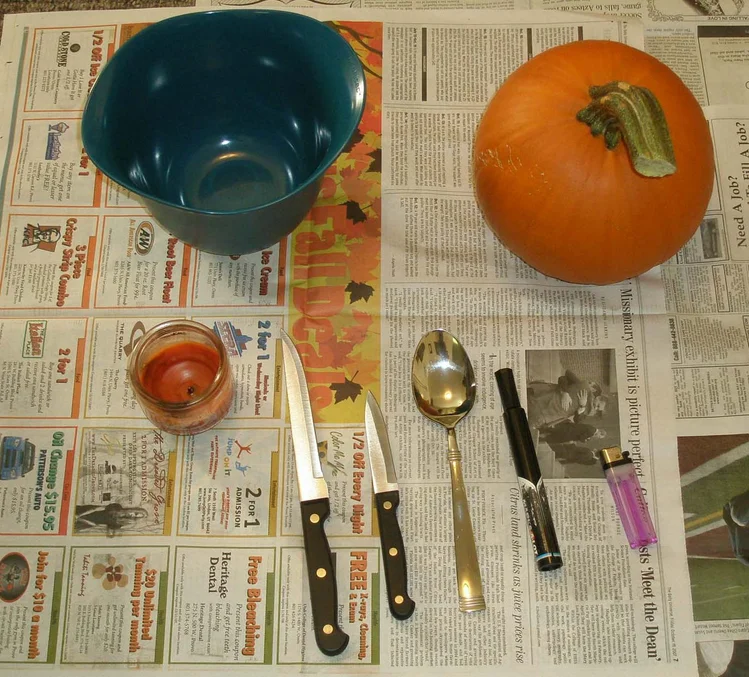
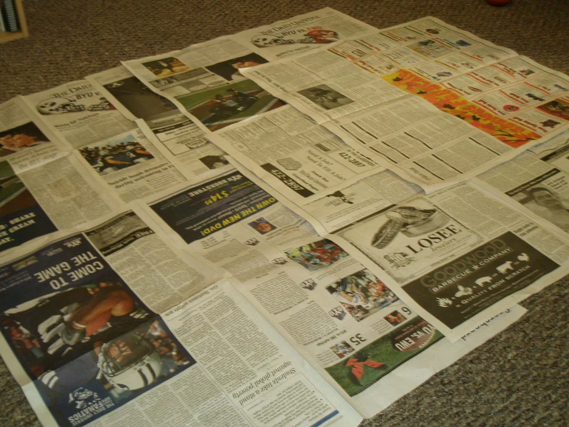
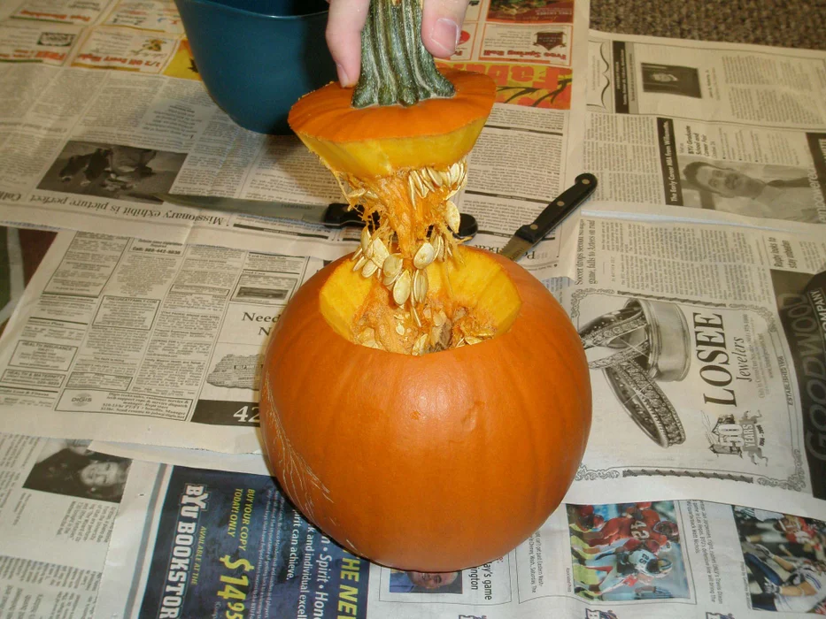

Imposter Syndrome
Imposter Syndrome Intro and Its Importance Signs of I.S.
I.S. Types Support and Coping Strategies Resources
What are Types of Imposter Syndrome
Click on each type for more info
Materials Needed
- 1 Pumpkin
- 1 Medium Serving Spoon
- 1 Medium Knife
- 1 Small Knife
- Newspaper
- Medium bowl
- 1 Dry Erase Marker
- 1 Candle
- 1 lighter

(Buhlers 2022)
Step 1: Preparing for Carving
Cover your working surface with the newspaper.
Warning: carving jack-o-lanterns can be messy

(Buhlers 2022)
Step 2: Cutting Out the Stem
Cut a hole around the stem at about a 45 degree angle towards the center of the pumpkin big enough for your hand to fit through.
WARNING-If the cut isn't at an angle the stem will fall into the pumpkin.
WARNING-Save the stem

(Buhlers 2022)
Step 3: Scooping Out the Pumpkin
Using the medium serving spoon, scoop out the seeds and pulp (the orange stringy material inside the pumpkin) and put it in the bowl

Step 4: Sketching the Face
On roundest or best looking side, Sketch the desired face or design of your Jack-o-lantern.